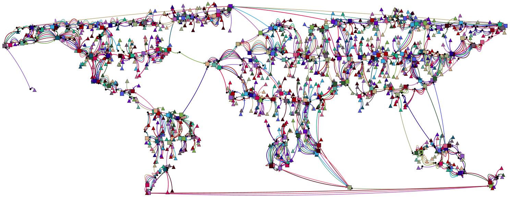

VirtuCast: Multicast and Aggregation with In-Network Processing (An Exact Single-Commodity Algorithm),
OPODIS 2013, Springer LNCS. To appear.
An examplanatory solution to an IGen generated CVSAP instance with 3200
nodes, of which 800 nodes are senders and 400 nodes are possible Steiner sites.
Triangles represent senders while
squares represent activated Steiner nodes. Activated Steiner nodes and
terminals are colored together with their route taken to connect to the
receiver.
